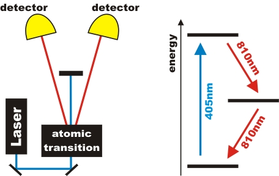

Basics
The generation of single photons and the polarization measurement are basics for all our quantum-optical experiments. In the first chapter it is explained why single photons can't be prepared with an attenuated laser beam. In the second chapter the Malus law is shown for single photons.
Basic 1: Generation and detection of single photons
Common misunderstanding of the term “single photon”
Many elementary texts on quantum physics are using the following example as a demonstration of single photons (see figure 1): A light source, for example a laser, is strongly attenuated by a filter. A detector sensitive to single photons is registering events. Such a setup is then extended with a double slit, an interferometer, etc. for showing interference of single photon “particles”. However, such an interpretation in terms of basic (nonrelativistic) quantum physics is not valid.
Figure 1: attenuated laser beam and binary detector
The time evolution of detection events is a Poisson distribution. This result is perfectly explained by matter-light interaction where matter is treated in the framework of quantum mechanics and light is treated as a classical electromagnetic wave. Various schemes of light detection, including the photoelectric effect might lead to light quanta intuitively, and obviously it is possible to explain the experimental outcome by photons (in the framework of relativistic quantum physics). When the goal is to show that a photon is different from an electromagnetic wave of specific amplitude, one cannot use these experiments, because the classical electromagnetic wave is a perfect model for the experiment [Lou00], [Fox06].
Let us have a look at a photodetector in darkness. It exhibits so called dark count, i.e. events triggered by thermal excitation, as shown in figure 2. The time evolution is a Poisson distribution as for light detection. Such noisy behaviour is very common in various branches of technology. Usually, one does not derive a “quantum behaviour of heat” from the observation – therefore one should not conclude quantum behaviour of light from the analogue observation.
Figure 2: Which detection is a quantum?
Preparation of single photons
A perfect source of single photons would be a single exited atom which emits light at an externally triggered point of time. Periodical repetition would yield light with perfect anti-bunching. Despite intensive research, such a source is not available yet. A good approach for many purposes are so called heralded single photons which are prepared from a pair of photons. Originally, heralded photons have been generated from an atomic beam of excited calcium atoms [Gra86]. Under decay, two photons are emitted almost simultaneously. One photon is detected. In this moment the existence of exactly one photon, namely the other component of the pair, is known. This photon is not yet absorbed and can be used for experiments. The principal setup of this technically demanding experiment is shown in figure 3.

Figure 3: Generation of photon pairs in an atomic cascade transition.
Photons are registered by detectors D and T.
Parametric down conversion
In our laboratory (and many research laboratories around the world) a different process is used for convenience. Certain transparent crystals (fig. 4) convert photons into pairs of photons. The conversion efficiency is quite low, but these crystals are very easy to handle and additionally the photon pairs are emitted in certain spacial directions when the crystal is excited by a laser. The process is called parametric down conversion, shortened to PDC. In our setup (fig.5), we generate two photons of equal wavelength 810nm from a blue photon at 405nm.

Figure 4: PDC crystal, illuminated by 405nm laser light.
The size of the crystal is 5mm x 5mm x 3mm length.

Figrue 5: Setup for heralded photons with parametric fluorescence (i. e. PDC)
Basic 2: Polarization measurement
Alternative to polarization filters
The linear polarization of light is often measured with a polarization filter. In our lab we use for the polarization measurement the combination of a polarization rotator (λ/2-plate) and a polarizing beam splitter (fig. 6). If the polarization of the light is horizontal it is transmitted at the polarizing beam splitter. If the polarization of the light is vertical it is reflected at a polarizing beam splitter. With a λ/2-plate you can change the direction of the light in front of the polarizing beam splitter. The advantage of the combination is that there is no lost of light. All light - transmitted or reflected - can be detected.
Figure 6: polarization rotator and polarizing beam splitter
left: sketch, right: experiment
Malus law for single photons:
The Malus law T = 100% cos²(ß) is valid for bright light. Is it also valid for single photons? This can be checked in an experiment with single photons. The heralded single photons for the experiment are produced separately (fig. 7). The components of the heralded single photon source are explained in the chapter setup. The photons at our source and in front of the polarization rotator are vertically polarized. The tilt of the polarization rotation in the experiment is automatic. Due to symmetry the photons are always tilted by the double angle of the polarization rotator. In the interactive experiment only the transmitted detector is used. The data can be plotted in a diagram. Can you confirm Malus law with single photons? For the interactive experiment you need Flash-Player (Version 9 - Freeware) [Download].

Figure 7: heralded single photon source
detector for triggering (left) and yellow fibre to the expeirment Malus law (right)
Explanation:
At the beginning of the measurement (polarization 0°) the polarization of the photons is vertical and all photons are reflected at the polarizing beam splitter. At a polarization of 90° (polarization rotator 45°) the vertical photons are tilted horizontal and all photons are transmitted. The behaviour between the both angles can be described by Malus law: T = 100% cos²(α) with α=90°-ß. You don't need the 90° in the α term if the photons in front of the polarization rotator are horizontal polarized: α=ß.
Under rotation of the λ/2-plate, the polarization angle is changed by twice the amount, i.e. a 22.5° physical rotation yields a 45° rotation of the polarization angle. λ/2-plates are fabricated from crystalline quartz of precise orientation and thickness, for further details we refer to monographs on classical optics.
With the combination of a polarization rotator and a polarizing beam splitter one can realize an exact 50% beam splitter with variable and exact beam splitter ratios.
Data from the experiment: Malus law with horizontal polarization
Author: P. Bronner, April 2008
Translation: G. Murphy